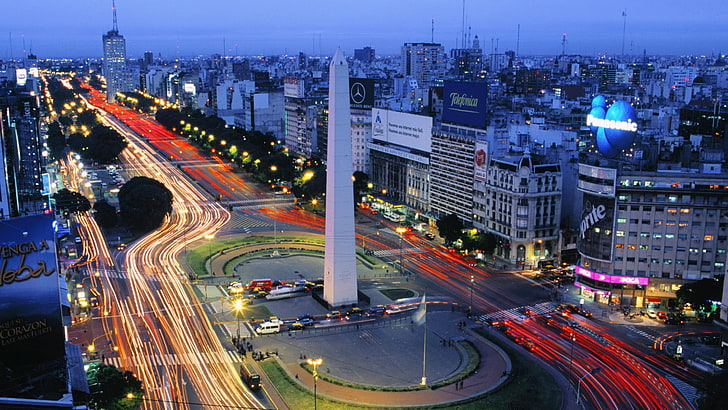

Ciudades
Lugares turisticos para visitar;
- Centro Cívico.
- Isla Victoria y Bosque de Arrayanes.
- Colonia Suiza.
- Cerro Catedral.
- Circuito Chico.
- Teleférico Cerro Otto.
Lugares turisticos para visitar;
- Museo Superior de las Bellas Artes.
- Parque Sarmiento.
- Paseo del Buen Pastor.
- Plaza San Martin
- Catedral de Cordoba
Lugares turisticos para visitar;
- Punta Walichu.
- Glaciar Perito Moreno.
- Parque Nacional Los Glaciares.
- Glaciar Upsala.
- Glaciarium Museo del Hielo Patagónico.
Lugares turisticos para visitar;
- Cementerio de la Recoleta.
- Teatro Colón.
- Casa Rosada.
- Obelisco.
- Plaza de Mayo.
- Caminito.
- El Ateneo Grand Splendid.

Lugares turisticos para visitar;
- Las Cataratas del Iguazú.
- Güirá Oga.
- Jardin de los Picaflores.
- Hito Tres Fronteras Puerto Iguazú.
Lugares turisticos para visitar;
- Catedral Basílica de Salta.
- Teleférico San Bernardo.
- Plaza 9 de Julio.
- Cabildo Histórico.
- Cerro San Bernardo.
- Virgen del Cerro.
Lugares turisticos para visitar;
- Parque General San Martín.
- Plaza Independencia.
- Cerro de la Gloria.
- Portones del Parque General San Martín.
- Fuente de los Continentes.
- Museo de Ciencias Naturales y Antropológicas Juan Cornelio Moyano.
Lugares turisticos para visitar;
- Laguna Esmeralda.
- Museo Marítimo y del Presidio de Ushuaia.
- Museo del Fin del Mundo.
- Bahia Encerrada.
- Canal Beagle.
- Cartel del Fin del Mundo.